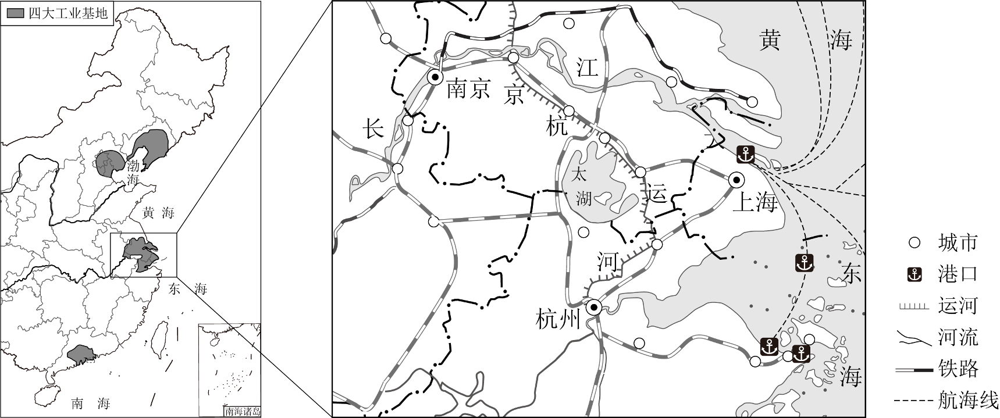
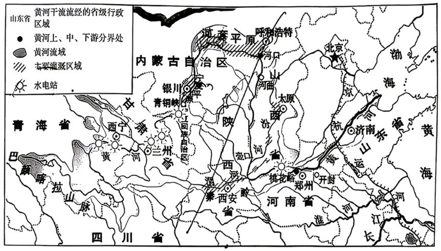
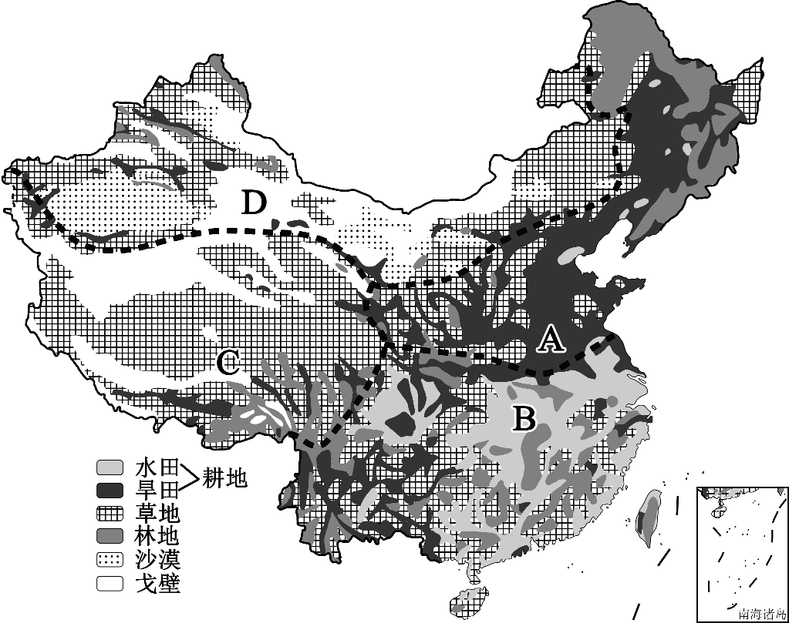
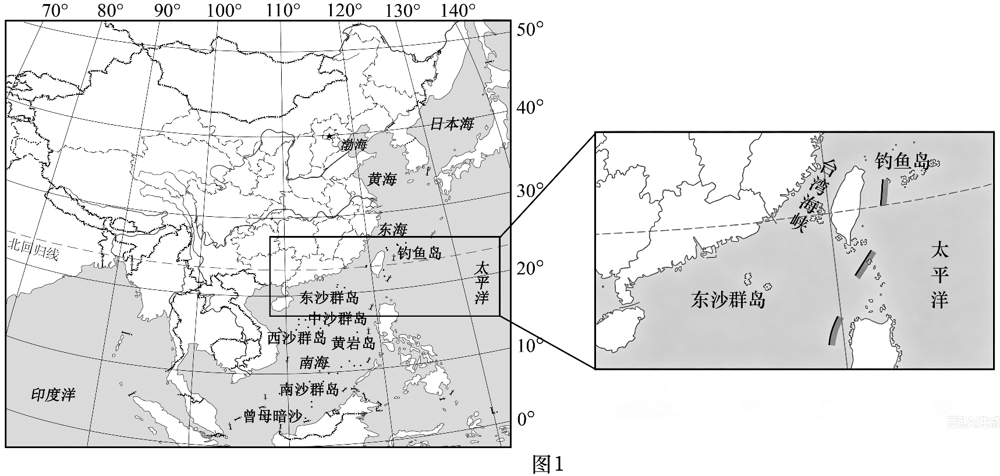
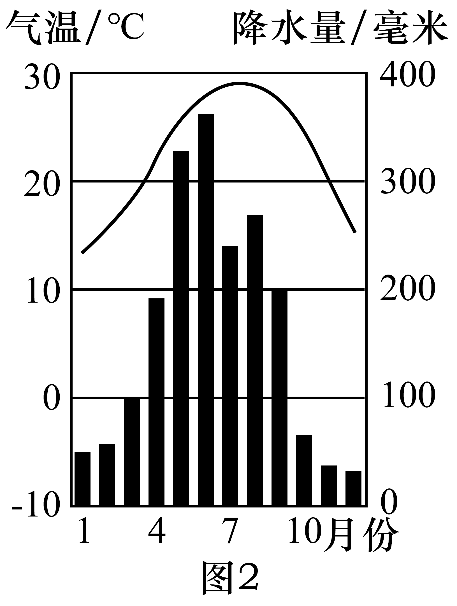

2026年北京平谷区初中学业合格考试地理试卷 原卷解析
北京市平谷区2026年初中学业合格考试
地理试卷
2026.6
考生须知
1．本试卷共10页，包括两部分，满分60分，考试时间60分钟。
2．在答题卡上准确填写学校名称、班级和姓名。
3．试题答案一律填涂或书写在答题卡上，在试卷上作答无效。
4．在答题卡上，选择题用2B铅笔作答，其他试题用黑色字迹签字笔作答。
5．考试结束，请将答题卡交回。
第一部分
本部分共20题，每题1分，共20分。在每题列出的四个选项中，选出最符合题目要求的一项。
地球仪是地球的模型。图1是地球仪图片，图2是地球仪示意图。读图，完成下面小题。

1. 地球仪能够直观表示的地球特征是（ ）
A. 地球的实际大小B. 地球的真实形状
C. 地球的实际面积D. 地球的海陆分布状况
2. 地球仪上（ ）
A. 地轴垂直于经线B. 纬线长度都相等
C. 经线相交于极点D. 赤道是个半圆
3. 图2中（ ）
A. 甲地位于北温带B. 乙地全年昼夜等长
C. 丙地位于南半球D. 丁地有极昼极夜现象
【答案】1. D 2. C 3. B
【解析】
【1题详解】
地球仪是地球缩小的模型，不能直观表示地球的实际大小，A不符合题意。
地球的真实形状是一个两极稍扁、赤道略鼓的不规则椭球体，地球仪是一个正球体，不能直观表示地球的真实形状，B不符合题意。
地球仪是缩小的模型，不能直观表示地球的实际面积，C不符合题意。
地球仪上用不同的颜色、符号和文字表示地理事物，能够直观表示地球的海陆分布状况，D符合题意。
【2题详解】
地轴穿过地心，与地球表面相交于南北两极，经线是连接南北两极的半圆，地轴与经线相交于极点，并不垂直，A错误。
纬线长度从赤道向两极逐渐缩短，到两极缩为一点，并非都相等，B错误。
所有经线都呈半圆状，且都相交于南北极点，C正确。
赤道是地球上最长的纬线，是一个完整的圆，D错误。
【3题详解】
甲地位于赤道（0°）与北回归线之间，位于热带，A错误。
乙地位于赤道上，赤道上全年昼夜等长，B正确。
丙地位于赤道以北，属于北半球，C错误。
丁地纬度为30°S，属于南温带，没有极昼极夜现象，D错误。
某同学通过“一笔画世界”活动学习世界的海陆分布。下图为该同学的作品。读图，完成下面小题。

4. “一笔画世界”过程中（ ）
A. 赤道穿过北美洲中部B. 南极洲被四大洋包围
C. 亚洲的面积大于欧洲D. 180°经线贯穿大西洋
5. 该同学的作品中，没有画出的是（ ）
A. 大洋洲B. 欧洲C. 南极洲D. 非洲
6. 读作品并结合海陆分布知识可知（ ）
A. 陆地主要集中在北半球B. 南半球的海洋面积比陆地小
C. 地球表面的陆地分为六大洲D. 北半球海洋面积比南半球大
【答案】4. C 5. A 6. A
【解析】
【4题详解】
赤道穿过非洲、亚洲、大洋洲和南美洲，不穿过北美洲，A错误。
南极洲被太平洋、大西洋、印度洋三大洋包围，不包括北冰洋，B错误。
亚洲是世界上面积最大的大洲，其面积远大于欧洲，图中也显示亚洲面积大于欧洲，C符合题意。
180°经线主要穿过太平洋和北冰洋，不贯穿大西洋，D错误。
【5题详解】
观察该同学的“一笔画世界”作品，图中画出了亚洲、欧洲、非洲、北美洲、南美洲和南极洲，没有画出大洋洲，A符合题意。
【6题详解】
从图中及海陆分布知识可知，世界陆地主要集中在北半球和东半球，A符合题意。
无论南半球还是北半球，都是海洋面积大于陆地面积，南半球海洋面积比陆地大得多，B错误。
地球表面的陆地分为亚洲、欧洲、非洲、北美洲、南美洲、大洋洲和南极洲七大洲，C错误。
南半球陆地面积小，海洋面积广阔，北半球海洋面积比南半球小，D错误。
下图为北半球年平均气温分布图。读图，完成下面小题。

7. 图中（ ）
A. 等温线陆地比海洋平直B. 气温自低纬向高纬逐渐降低
C. 海洋气温比陆地气温高D. 年均温最低的区域在北美洲
8. 图中四地气温差异及其主要影响因素的分析，正确的是（ ）
A. ①地高于②地——纬度位置B. ②地高于④地——人类活动
C. ③地低于②地——地形地势D. ④地高于③地——海陆分布
【答案】7. B 8. C
【解析】
【7题详解】
海洋性质较为均一，陆地地形、海陆分布等因素复杂，所以等温线海洋比陆地平直，A错误；受太阳辐射影响，气温大致自低纬向高纬逐渐降低，从图中也可以看到等温线数值大致从赤道（低纬）向两极（高纬）减小，B正确；图中没有明确给出同一纬度海洋和陆地气温比较的信息，而且海洋和陆地气温高低会随季节变化，C错误；从图中可知年均温最低的区域在北极地区，而不是北美洲，D错误。故选B。
【8题详解】
①地和②地纬度相当，①地位于海洋，②地位于陆地，①地高于②地主要是海陆分布因素，不是纬度位置，A错误；②地纬度低于④地，②地高于④地主要是纬度位置因素，不是人类活动，B错误；③地位于青藏高原地区，海拔高，气温低，②地海拔相对较低，③地低于②地主要是地形地势因素，C正确；④地纬度高于③地，④地气温低于③地，D错误。故选C。
【点睛】世界上气温分布的规律是从赤道向南北两极逐渐降低，世界上平均气温最高的地方位于非洲的北部，世界上平均气温最低的地方是南极洲；影响气温高低的因素有纬度因素、海陆因素、地形因素等。
俄罗斯自然资源丰富，种类齐全，是世界上少数几个资源基本自给的国家之一。丰富的自然资源为其工业发展奠定了基础。下图为俄罗斯主要工业区和矿产资源分布图。读图，完成下面小题。

9. 俄罗斯分布较广的地形类型是（ ）
A. 高原B. 平原C. 丘陵D. 山地
10. 俄罗斯工业区多靠近原料产地分布，其主要依托的本地优势是（ ）
A. 气候温暖湿润B. 矿产资源丰富
C. 劳动力充足D. 海运条件优越
11. 结合矿产、工业区与地形分布，判断俄罗斯人口、城市主要集中分布在（ ）
A. 东欧平原B. 西西伯利亚平原
C. 中西伯利亚高原D. 东西伯利亚山地
【答案】9. B 10. B 11. A
【解析】
【9题详解】
俄罗斯自西向东分为东欧平原、西西伯利亚平原、中西伯利亚高原、东西伯利亚山地，其中东欧平原、西西伯利亚平原面积广阔，平原占全国国土大半，是分布最广的地形，B正确；
高原、山地、丘陵面积小，ACD错误。
【10题详解】
俄罗斯自然资源丰富，种类齐全，丰富的矿产资源为其重工业发展奠定了基础，因此工业区多靠近原料产地分布，B正确；
整体纬度高，大部分地区属于温带大陆性气候，不存在温暖湿润的大范围区域，A错误；
地广人稀，人口增长缓慢，劳动力相对不足，C错误；
虽然海岸线漫长，但由于纬度高，气候寒冷，港口结冰期长，海运条件并不优越，D错误。
【11题详解】
东欧平原气候相对温和，地形平坦，工农业发达，交通便利，是俄罗斯人口、城市和经济的主要集中分布区，A正确；
西西伯利亚平原纬度较高，气候寒冷，多沼泽，人口和城市稀少，B错误；
中西伯利亚高原、东西伯利亚山地气候寒冷，地形崎岖，人口和城市稀少，CD错误。
剪纸是中国传统民间艺术。下图为展示傣族风俗习惯的剪纸作品，傣族集中分布在云南省。读图，完成下面小题。

12. 傣族的传统节日是（ ）
A. 花山节B. 那达慕大会C. 三月街D. 泼水节
13. 剪纸是我国优秀传统民间艺术，承载着地域文化与生活智慧，体现了文化与地理环境的密切关系。体现剪纸艺术价值与传承的是（ ）
A. 剪纸仅用于装饰，无实际文化价值
B. 现代科技发展后，剪纸已无传承必要
C. 剪纸只流行于北方地区，与南方地理环境无关
D. 剪纸题材多反映当地环境，是地域文化的重要载体
14. 云南省的行政中心是（ ）
A. 昆明B. 桂林C. 成都D. 拉萨
【答案】12. D 13. D 14. A
【解析】
【12题详解】
泼水节是傣族的传统节日，D正确；
花山节是苗族的传统节日，A错误；
那达慕大会是蒙古族的传统节日，B错误；
三月街是白族的传统节日，C错误。
【13题详解】
剪纸题材多反映当地的自然环境和风俗习惯，是地域文化的重要载体，体现了文化与地理环境的密切关系，D正确；
不仅用于装饰，还承载着地域文化与生活智慧，具有极高的文化价值，A错误；
我国优秀传统民间艺术，即使现代科技发展，依然具有重要的传承价值和必要性，B错误；
剪纸在全国各地都有分布，南方地区也有丰富的剪纸艺术，如题干中的傣族剪纸，C错误。
【14题详解】
昆明是云南省的行政中心，A正确；
桂林是广西壮族自治区的城市，广西壮族自治区的行政中心是南宁，B错误；
成都是四川省的行政中心，C错误；
拉萨是西藏自治区的行政中心，D错误。
目前，我国越来越多的老年人选择“冬南夏北”的候鸟式生活：冬季到南方温暖地区居住，夏季回北方凉爽地区避暑。这种生活方式充分体现了我国气候的特点，也反映了社会发展给人民生活带来的便利。下图为中国1月平均气温分布图。读图，完成下面小题。

15. 读图可知，我国1月平均气温分布特点是（ ）
A. 全国普遍高温B. 南北温差小，冬季温和
C. 南北温差大，越往北气温越低D. 气温由东向西逐渐升高
16. 老年人选择“冬季到南方、夏季回北方”，主要考虑的自然因素是（ ）
A. 降水多少B. 气温差异C. 地形起伏D. 植被类型
17. “候鸟式养老”能在我国流行，主要得益于（ ）
①南北气候差异显著 ②交通与通信快速发展
③人民生活水平提高 ④全国冬季气温都很高
A. ①②③B. ①②④C. ①③④D. ②③④
【答案】15. C 16. B 17. A
【解析】
【15题详解】
全国普遍高温（除青藏高原外）是我国夏季气温特征，1月为冬季，A错误。
冬季南北温差大，南方温暖，北方寒冷，B错误。
1月等温线大致东西延伸，气温随纬度升高降低，南北温差大、越往北越冷，符合图中分布规律，C符合题意。
冬季气温主要受纬度因素影响，由南向北逐渐降低，而不是由东向西逐渐升高，D错误。
【16题详解】
老年人选择“冬南夏北”主要是为了避寒和避暑，与降水多少、地形起伏关系不大，AC不符合题意。
冬季南方纬度低，气温较高，气候温暖；夏季北方纬度高，气温较低，气候凉爽。因此主要考虑的自然因素是气温差异，B符合题意。
植被类型受气候影响，不是老年人选择居住地的主要自然因素，D不符合题意。
【17题详解】
我国南北跨纬度广，南北气候差异显著，为“候鸟式养老”提供了自然条件，①符合题意。
交通与通信的快速发展使得跨地区出行和联系更加便捷，②符合题意。
人民生活水平的提高为“候鸟式养老”提供了经济基础，③符合题意。
冬季南北温差大，北方气温很低，南方温暖，并非全国冬季气温都很高，④错误。
长江三角洲地区对长江流域乃至全国具有辐射带动作用。下图为长江三角洲地区简图。读图，完成下面小题。

18. 长江三角洲地区（ ）
A. 地处长江下游，濒临南海B. 依托长江干流，联系京津冀地区
C. 地处江海交汇之地，港口众多D. 依托京杭运河，联系粤港澳地区
19. 该地区的沪宁杭工业基地（ ）
A. 矿产资源丰富，以重工业为主B. 邻近香港澳门，对外贸易便利
C. 以首都为核心，辐射带动全国D. 科技力量雄厚，工业结构完整
20. 为提升辐射带动作用，该地区应进一步（ ）
①完善基础设施建设 ②提升科技创新能力
③推进生态环境治理 ④大力发展高能耗的产业
A. ①②③B. ①②④C. ①③④D. ②③④
【答案】18. C 19. D 20. A
【解析】
【18题详解】
长江三角洲地区地处长江下游，濒临黄海和东海，A错误。
长江干流自西向东流，主要联系长江中上游地区，不能联系北方的京津冀地区，B错误。
地处江海交汇之地，沿江沿海港口众多，水运便利，C符合题意。
依托京杭运河，联系京津冀地区，不能联系南方的粤港澳地区，D错误。
【19题详解】
沪宁杭工业基地矿产资源贫乏，以综合性工业为主，A错误。
邻近香港澳门的是珠江三角洲工业基地，B错误。
以首都北京为核心的是京津唐工业基地，C错误。
该工业基地科技力量雄厚，工业结构完整，是我国最大的综合性工业基地，D符合题意。
【20题详解】
完善基础设施建设有利于加强区域内外的联系，提升辐射带动作用，①符合题意。
提升科技创新能力有利于促进产业升级，增强经济实力和辐射能力，②符合题意。
推进生态环境治理有利于区域的可持续发展，③符合题意。
大力发展高能耗的产业会加剧能源短缺和环境污染，不符合可持续发展理念，④不符合题意。
第二部分
本部分共3题，除特别说明外每空1分，共40分。
21. 某同学在学完黄河后，结合地图出了以下测试题，邀请你来挑战。下图为黄河流域及部分水电站分布图。读图，完成下列问题。

源流概况
（1）黄河发源于青海省__________山脉北麓，自西向东注入__________海，是我国第二长河，干流呈巨大的“__________”字形，上中下游分界点为河口和__________。
河段特征
（2）水电站主要分布在__________游，这里流经阶梯交界处，落差__________，__________资源丰富，适合修建水电站；中游流经黄土高原，该区域水土流失严重，导致河流__________含量剧增；下游流经华北平原，地势低平，流速__________，已经形成了__________，对沿岸居民形成威胁。
人地协调
（3）黄河各段特色鲜明，如何趋利避害利用黄河考验着你的智慧，请任选一个河段说明其利或弊，同时简要说出怎样做才符合人地协调发展的思想____________________________________________________________。
（4）请你选择上述测试题中的任意一个填空，说说这位同学出的好或不好，并简述理由____________________________________________________________。
【答案】（1） ①. 巴颜喀拉 ②. 渤 ③. 几 ④. 桃花峪
（2） ①. 上 ②. 大 ③. 水能 ④. 泥沙（或含沙） ⑤. 减慢（或缓慢） ⑥. 地上河
（3）
核心观点：黄河中游存在严重的水土流失之弊，需因地制宜开展水土保持工作以实现人地协调。
弊端分析：中游流经黄土高原，受土质疏松和降水集中等因素影响，水土流失严重，导致河流泥沙含量剧增，进而使下游淤积形成“地上河”，加剧洪涝威胁。
协调做法：应树立可持续发展理念，在黄土高原地区采取植树种草等生物措施，以及打坝淤地、修筑梯田等工程措施，从根本上减少入河泥沙，实现生态与经济效益的统一。（注：若选择上游或下游，言之有理亦可）
（4）
选择填空：“地上河”。评价：出的好。
理由：该填空设问具有严密的因果逻辑，能够引导学生根据题干中的“地势低平”推导“流速减慢”，进而得出泥沙沉积形成“地上河”的结论，有效考查了学生的地理综合思维能力。
【解析】
【小问1详解】
考查黄河源流概况。解题关键是调动脑海中的黄河流域图，提取发源地、注入海洋、干流形状及分界点等基础信息。
【小问2详解】
考查黄河水文特征的成因。解题思路需紧扣“地形地势对河流的影响”这一核心规律，按“阶梯交界→落差大→水能丰富”和“平原→流速慢→泥沙淤积→地上河”的因果链条进行逻辑推理。
【小问3详解】
考查黄河的治理与人地协调观。解题技巧是采用“特征—影响—对策”的逻辑框架。首先锁定某一河段的突出特征（如中游含沙量大），其次分析其带来的不利影响（弊），最后结合可持续发展理念提出针对性的生态治理措施。
【小问4详解】
考查试题评价与开放性思维。解题关键是选取能体现地理学科核心素养（如综合思维、区域认知）的空缺处。思路顺序为：明确所选填空→给出明确评价（好/不好）→从考查知识点的重要性和对地理思维的启发性两方面阐述理由。
22. “中国人的饭碗任何时候都要牢牢端在自己手中”，粮食安全是国家安全的底线。我们要有“大食物观”，向耕地、草原、海洋等要食物，构建多元化食物供给体系。下图为中国土地资源利用类型分布图。读图，回答下列问题。

向耕地要粮
（1）图中A为北方地区，地形类型以__________和高原为主；虽然冬季寒冷干燥，但是夏季__________、为作物生长提供了充足的__________条件；耕地类型以__________为主，主要粮食作物为__________，列举一个利用该作物加工后的食物__________。
（2）图中B为南方地区，地形类型多样；相较于其他地区，南方地区纬度__________，且降水丰沛，适合种植的主要的粮食作物为__________。
向草原要粮
（3）图中C为__________地区，D为西北地区，两者均处内陆，降水相对较__________，土地类型有草地、林地、荒漠、戈壁等，适合发展__________（农业部门），可以为人们提供肉、乳等食物。
向海洋要粮
（4）我国是世界重要的海洋大国，海域面积辽阔，海洋中的__________可以作为人们的食物。
向创新要粮
（5）除了上述方式，为保障我国粮食安全，你还知道什么方式或者提出自己的建议__________________________________________________。
【答案】（1） ①.
平原 ②.
高温多雨（或雨热同期） ③.
水热 ④.
旱地 ⑤.
小麦 ⑥.
馒头（或面条、饺子等合理即可）
（2） ①.
较低 ②.
水稻 （3） ①.
青藏 ②.
少 ③.
畜牧业 （4）
鱼虾（或海产品、藻类等合理即可）
（5）
依靠科学技术，培育优良品种，提高粮食单产；切实保护耕地，严守18亿亩耕地红线；树立节约意识，拒绝餐饮浪费等。（任答一点，合理即可）
【解析】
【小问1详解】
首先根据四大地理区域分布定位A为北方地区。结合中国地形图，北方主要包括东北平原、华北平原和黄土高原，故地形以平原和高原为主。其次，调动温带季风气候知识，其夏季特征为高温多雨（雨热同期），满足了作物生长的水热需求。最后，结合图例和农业分布常识，北方降水相对较少，耕地类型为旱地，代表性粮食作物是小麦，其加工食品为常见的面食（馒头、面条、饺子等）。
【小问2详解】
定位B区域为南方地区。对比北方地区，南方地区纬度更低，热量更充足。结合气候特征，南方降水丰沛，水田广布，最适宜种植喜高温多雨的粮食作物水稻。
【小问3详解】
根据轮廓和位置，C位于我国西南部第一级阶梯，为青藏地区。青藏地区（高寒）与西北地区（干旱）均因深居内陆或地形阻挡，降水稀少。结合图例中大面积的“草地”分布，可推断其适宜发展的农业部门为畜牧业，主要提供畜产品。
【小问4详解】
紧扣“向海洋要粮”的主题，联系海洋生物资源常识，海洋被称为“蓝色粮仓”，能为人类提供丰富的鱼类、虾蟹、海带等水产品，补充传统粮食的不足。
【小问5详解】
本题为开放性设问，考查保障国家粮食安全的综合措施。解题切入点可分为三个维度：①是“开源”，即依靠农业科技创新（如培育良种）提高单产；②是“固本”，即落实国家政策，保护现有耕地数量和质量；③是“节流”，即从日常生活中养成节约粮食的习惯。
23. 广东茂名“90后”新农人扎根家乡，牵头成立种植专业合作社，依托当地独特自然条件，通过对荔枝、化橘红、沉香等深加工发展特色农产品产业，用电商和农文旅融合拓宽销路，带动乡亲增收；目前茂名相关特色产业全产业链总产值超550亿元，带动60多万人就业增收，助力家乡实现“绿起来、富起来、美起来”的跨越。图1为广东省位置简图，图2为广州气温曲线和降水量柱状图。读图，完成下列问题。


基础条件
（1）位置：广东省南临南海，__________（特殊纬线）穿过其中部。
（2）气候：以亚热带季风气候为主，夏季高温多雨，冬季__________，年降水量在1500毫米__________（以下/以上），水热充足。
（3）地形：以丘陵为主，适宜发展__________（农业部门），自然禀赋优越。
发展举措
（4）依据当地环境特点选择荔枝、化橘红、沉香等喜__________（湿热/干冷）的树木发展特色产业。
（5）“90后”新农人牵头成立__________依托当地基础条件发展特色农产品产业，通过__________（方式）延伸产业链，通过__________（方式）拓宽销路。
发展成效
（6）“90后”新农人推广种植荔枝、化橘红、沉香等树木，让家乡“__________”；带动乡亲发展特色产业，相关全产业链总产值超550亿元，带动60多万人就业，让家乡“__________”，他们用实际行动践行“绿水青山就是金山银山”，积极为建设美丽家乡做贡献，让家乡“美起来”。
见贤思齐
（7）简单介绍自己家乡特点，同时分享一下自己能为家乡做点什么事情：__________________________________________________________________________________。
【答案】（1）
北回归线 （2） ①.
温和少雨（或温和干燥） ②.
以上 （3）
林业（或林果业） （4）
湿热 （5） ①.
种植专业合作社 ②.
深加工 ③.
电商和农文旅融合 （6） ①.
绿起来 ②.
富起来 （7）
我的家乡具有独特的地理环境，我愿用实际行动助力家乡的可持续发展。家乡特点：我的家乡位于华北平原，地形平坦，属于温带季风气候，夏季高温多雨，冬季寒冷干燥，是重要的小麦等粮食作物产区。我的行动：努力学习科学文化知识，未来利用现代农业科技帮助家乡提高农作物产量和品质；利用短视频等新媒体平台，宣传家乡的特色农产品，拓宽销售渠道，助力乡亲增收；树立环保意识，保护家乡的土地和水资源，践行绿色发展理念。
【解析】
【小问1详解】
北回归线穿过广东省中部，是该省重要的位置特征。
【小问2详解】
我国亚热带季风气候的特征是夏季高温多雨，冬季温和少雨；广东位于我国南部湿润区，年降水量多在1500毫米以上，水热充足。
【小问3详解】
丘陵地形坡度较大，适合发展林业（林果业），既可以因地制宜利用土地，也利于保持水土，适配题干中的经济林木种植。
【小问4详解】
广东气候水热充足、整体湿热，当地特色树种荔枝、化橘红等都符合喜湿热的生长习性。
【小问5详解】
新农人牵头成立种植专业合作社，通过深加工延长产业链提高附加值，通过电商和农文旅融合拓宽销路。
【小问6详解】
结合题干末尾的发展目标，推广种植树木提高植被覆盖率，实现家乡绿起来；发展产业带动就业增收、提高经济总产值，实现家乡富起来。
【小问7详解】
对于开放类问题，先梳理自身家乡的自然、产业等特点，再结合实际列举力所能及的助力家乡发展的行为。